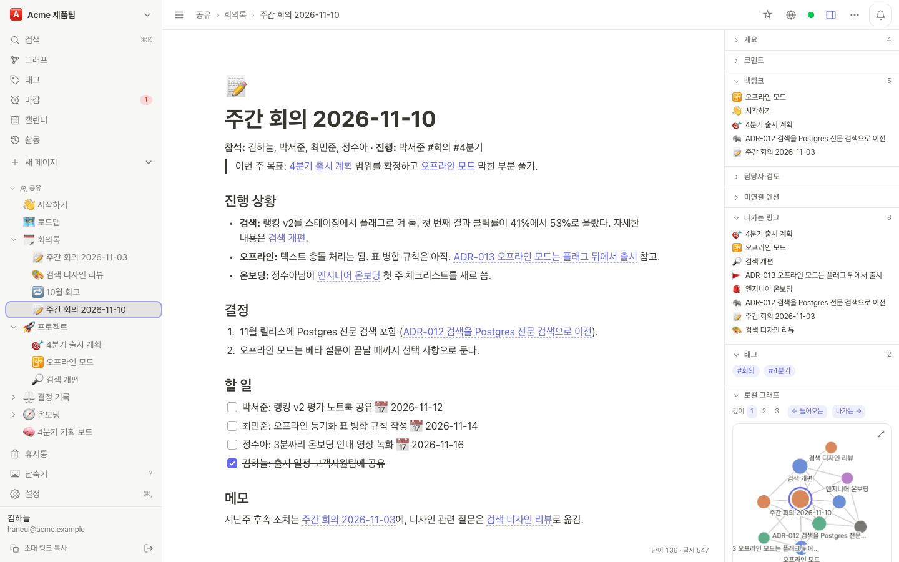
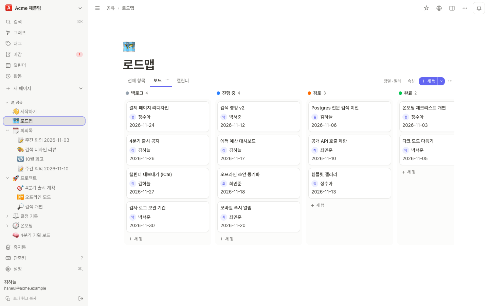
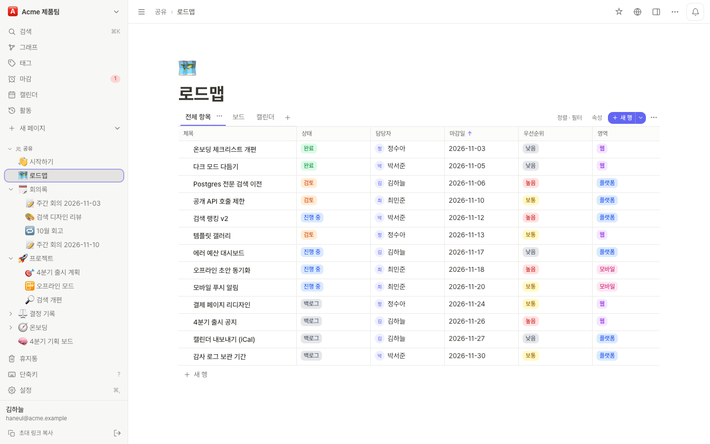
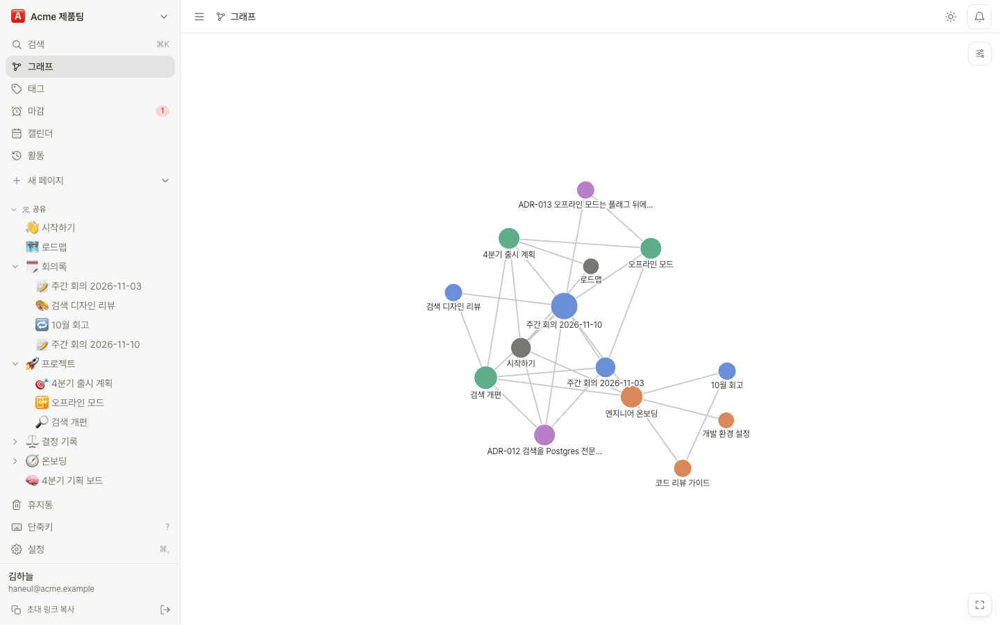
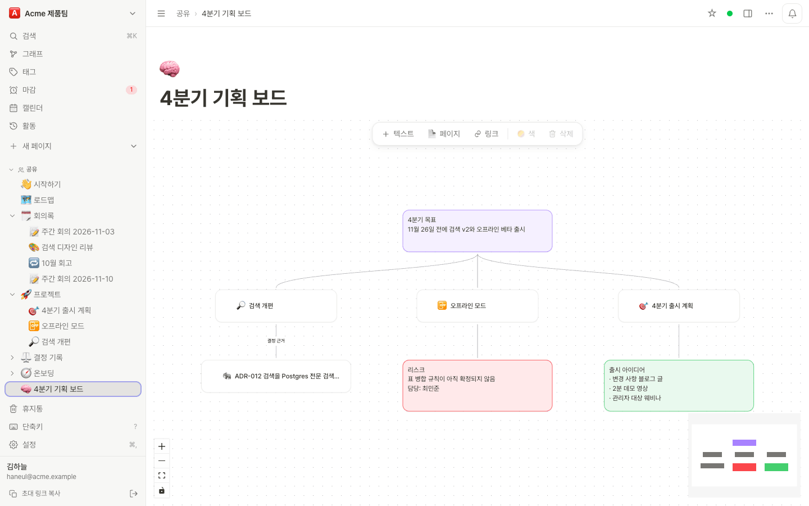
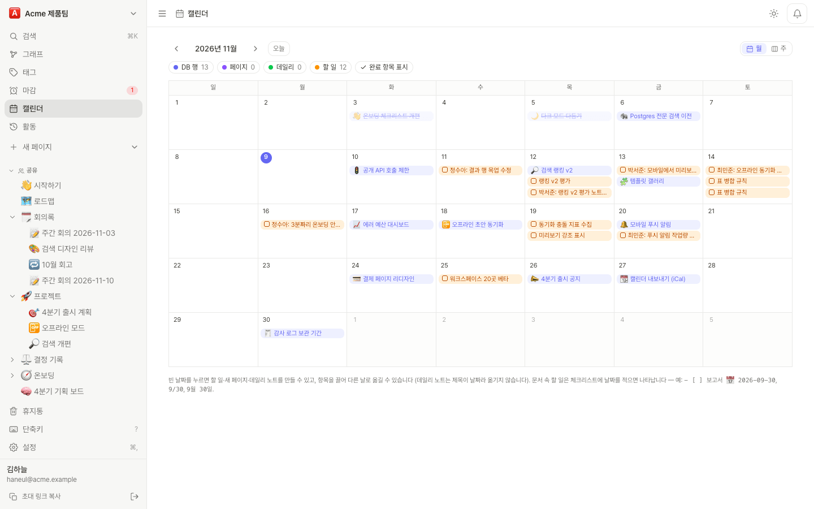
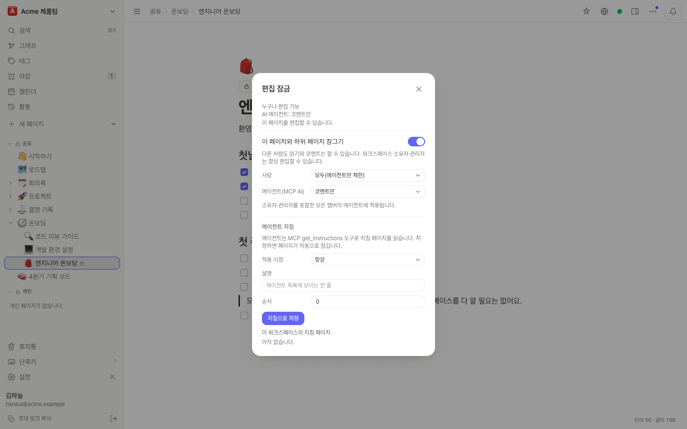

v0.9.0 MIT · 셀프호스트
팀이 쓰고, AI 에이전트도 읽고 쓰는 노트
노션식 데이터베이스와 옵시디언식 링크, 그래프, JSON Canvas를 한 서버에서 같이 쓸 수 있는 노트 앱입니다. 실시간 동시 편집과 AI 에이전트용 MCP 서버가 들어 있고, 모든 기능을 MIT 라이선스로 무료 공개하고 있습니다.
5분 만에 설치하기 (Docker와 Compose 플러그인 필요)
git clone https://github.com/PROVE1352/inkling.git
cd inkling
cp .env.example .env
# .env에 POSTGRES_PASSWORD를 적은 뒤
docker compose up -d
./deploy/signup-key.sh new "first admin"
# http://localhost:3000/register 에서 키를 붙여 넣고 가입
둘러보기
40초 만에 보는 Inkling
기능
데이터베이스와 링크로 엮은 문서를 한 서버에서
노션처럼 표와 보드로 일을 정리하고, 옵시디언처럼 문서를 링크로 엮는 일을 같은 워크스페이스에서 할 수 있습니다.
뷰 다섯 가지를 갖춘 데이터베이스
같은 행을 표, 보드, 캘린더, 갤러리, 타임라인으로 볼 수 있고, 뷰마다 정렬과 필터, 그룹을 따로 정합니다.
- 텍스트, 숫자, 선택, 다중 선택, 날짜, 체크박스, 사람, URL, 관계형, 롤업 속성
- 행 템플릿, CSV·XLSX 가져오기와 내보내기
- 에이전트도 속성 이름으로 행을 조회하고 고칩니다


링크, 그래프, 캔버스
[[위키링크]]는 자동완성이 되고, 오른쪽 패널에서 백링크와 미연결 멘션을 볼 수 있습니다. 워크스페이스 전체 그래프와 지금 페이지 주변만 보는 로컬 그래프가 있습니다.
- 옵시디언의 JSON Canvas(
.canvas) 형식을 그대로 따르는 캔버스 - Dataview 문법 일부(
TABLE,LIST,TASK)를 쓰는 쿼리 블록 #태그,@멘션, 데일리 노트


할 일과 마감일
문서 안의 체크리스트에 날짜를 붙이면 할 일로 잡혀서 마감 화면과 캘린더에 같이 나옵니다. 데이터베이스에는 따로 캘린더 뷰가 있고, 마감일은 iCal로 구독할 수 있습니다.

블록 에디터
슬래시 메뉴, 표, 코드 블록, 체크리스트, 콜아웃, KaTeX 수식, 이미지와 파일 끌어다 놓기. 이름을 붙여 저장하는 버전 기록도 있습니다.
실시간 동시 편집
Yjs로 구현했습니다. 다른 사람의 커서와 접속 상태가 보이고, 오프라인에서 고친 내용은 다시 연결될 때 합쳐집니다.
워크스페이스와 게스트
소유자, 관리자, 멤버 역할과 개인 페이지, 페이지별 권한이 있고, 공유받은 페이지만 보는 게스트를 초대할 수 있습니다.
편집 잠금
페이지와 하위 페이지를 담당자와 지정한 편집자만 고치게 할 수 있습니다. AI 에이전트는 사람과 따로 '코멘트만'이나 '읽기만'으로 묶어 둘 수 있습니다.
가져오기와 내보내기
노션 내보내기 zip, front matter와 [[링크]]를 살린 마크다운·zip, PDF 내보내기, Slack·Discord 웹훅을 지원합니다.
한국어와 영어
화면은 한국어와 영어를 지원하고, PWA로 설치할 수 있으며, 라이트·다크 테마가 있습니다.
에이전트
앱에 들어 있는 MCP 서버
Claude Code, claude.ai 같은 MCP 클라이언트를 OAuth 2.1로 연결합니다. 사람마다 자기 계정으로 따로 연결하기 때문에 에이전트는 연결한 사람이 볼 수 있는 페이지만 다룹니다. 연결할 때 읽기 전용과 읽기·쓰기 중에서 고를 수 있고, 영구 삭제 도구는 일부러 만들지 않았습니다.
› find_context(query: "출시 체크리스트 상태 페이지")
2 result(s) for "출시 체크리스트 상태 페이지", ~380/3500 tokens
<untrusted_content source="find_context">
[1] 출시 계획 › 체크리스트
(page 7c1e…; §체크리스트 v=4f2a9c01b3de; can: read,comment,edit)
- [x] 요금 페이지 문구
- [ ] 상태 페이지, 담당 박서준, 마감 2026-11-20
- [ ] 변경 사항 공지
[2] 주간 회의 2026-11-03 › 결정
(page 91ab…; §결정 v=0d3e5b7a9c12; can: read,comment,edit)
상태 페이지는 출시 전에 연다.
Also relevant (not shown):
- 온보딩 (page 3f0c…): §계정 ~150 tok
</untrusted_content>
Next: read_page(pageId, section=anchor) for a full section; …5,000페이지 벤치마크에서 질문당 평균 토큰 2,254 → 624, 도구 호출 3.68 → 1.00회. 출력은 줄이고 id는 짧게 줄였습니다.
› patch_section(pageId: "7c1e…", section: "체크리스트", mode: "append",
markdown: "- [ ] 변경 사항 공지", baseVersion: "4f2a9c01b3de")
Conflict: Section "체크리스트" changed since baseVersion 4f2a9c01b3de;
nothing was written. Merge your edit into the current content and retry
with baseVersion 8b61d0e2a7f4.
Current §체크리스트 (v=8b61d0e2a7f4):
- [x] 요금 페이지 문구
- [x] 상태 페이지, 담당 박서준
› patch_section(…, baseVersion: "8b61d0e2a7f4")
Done (append): §체크리스트 is now v=c27a90f13e56.문장 하나를 고칠 때 읽고 통째로 바꾸면 약 2,415토큰이 들지만 patch_section은 약 222토큰입니다. 같은 섹션을 사람이 치고 있어도 그 사람의 글은 남습니다.
› changes_since(cursor: "…")
2 changes in 2 pages.
<untrusted_content source="changes">
page "출시 계획" 7c1e… (by 김하늘)
modified 체크리스트 (체크리스트)
- - [ ] 상태 페이지, 담당 박서준
+ - [x] 상태 페이지, 담당 박서준
page added: "주간 회의 2026-11-10" 2b9d… (by 이지원 via Claude Code)
</untrusted_content>
next cursor: …커서를 에이전트 쪽 노트에 저장해 두고 다음 세션에 다시 부르면 됩니다. AI가 한 일은 여기와 버전 기록, 활동 화면에 '사용자 (앱 경유)'로 남습니다.
› get_instructions(workspaceId: "…")
<instructions page="…" title="에이전트 규칙" mode="always">
회의록은 회의/ 아래에 쓴다. 재무/ 아래 페이지는 고치지 않는다.
</instructions>
› patch_section(pageId: "a40d…", section: "4분기", …)
"4분기 예산" is locked for agents (comment only). A person must make this
edit in the web app; you can add a comment with the suggested change.사용자가 쓴 내용은 신뢰하지 않는 데이터로 감싸서 넘기고 수상한 문구는 표시합니다. 이건 완화책일 뿐이고, 실제 경계는 편집 잠금과 연결 권한, 워크스페이스별 에이전트 차단입니다.
−72%
5,000페이지 벤치마크에서 find_context로 줄어든 질문당 토큰
~222 토큰
patch_section으로 문장 하나 고치는 비용 (읽고 바꾸기는 ~2,415)
6/6
에이전트가 고치는 섹션에서 사람이 치던 글이 남은 시나리오
0
영구 삭제 도구 수. trash_page는 30일 안에 되살릴 수 있습니다


Claude Code에 연결한 뒤 /mcp → inkling → Authenticate
claude mcp add --transport http inkling https://notes.example.com/mcp설치
docker compose 한 번으로
Postgres, 앱, 백업 사이드카가 한 묶음이고, 자동 HTTPS가 필요하면 Caddy 설정을 겹쳐 씁니다. 미리 빌드한 이미지 ghcr.io/prove1352/inkling(amd64, arm64)를 받아 오기 때문에 1 GB 서버에서도 따로 빌드할 필요가 없습니다.
compose 파일을 받고 .env 채우기
Docker와 Compose 플러그인이 필요합니다. HTTPS를 쓰려면 서버를 가리키는 도메인도 있어야 합니다.
git clone https://github.com/PROVE1352/inkling.git && cd inkling
cp .env.example .env
# PUBLIC_URL=https://notes.example.com DOMAIN=notes.example.com
# POSTGRES_PASSWORD=<긴 임의 문자열> BACKUP_PASSPHRASE=<서버 밖에도 보관>Caddy와 함께 띄우기
인증서는 Caddy가 받아 오고 갱신합니다. 마이그레이션은 앱이 뜰 때 자동으로 돌아갑니다.
docker compose -f compose.yaml -f deploy/compose.caddy.yaml up -d첫 계정 만들기
기본 설정에서는 가입 키가 있어야 가입할 수 있습니다. 처음 가입한 계정이 관리자가 되고, 다음 키부터는 관리 화면에서 만들 수 있습니다.
./deploy/signup-key.sh new "first admin"
# Signup link: https://notes.example.com/registerdocker compose pull app, 재시작 순서입니다. 자세한 내용은 운영 문서와 백업 문서(영어)를 보시면 됩니다.
- PostgreSQL이 필요하고(SQLite 모드 없음), 인스턴스 하나로만 돌아갑니다.
- 데스크톱·모바일 네이티브 앱은 없습니다. 웹 앱을 PWA로 설치해서 쓰시면 됩니다.
- 사용자가 아직 많지 않은 새 프로젝트입니다. AI 코딩 에이전트를 많이 써서 만들었고, 동시성, 자원 사용, 보안 위주로 여러 번 검토했습니다. 남아 있는 문제는 알려진 문제에 정리해 두었습니다.